아스페른-에슬링 에필로그 - 더 간절한 쪽이 승리한다
게시: 2017-04-23T21:43:38+09:00
아스페른-에슬링 전투는 프랑스군에게나 오스트리아군에게나 전례없이 길고도 치열한 대규모 전투였습니다. 양측은 거의 48시간 동안 잠도 거의 먹지도 못 자고 죽을 힘을 다해 행군하거나 싸웠지요. 5월 22일 오후 5시 이후 이 대규모 살륙전이 서서히 잦아든 것은 뼈와 살로 이루어진 인간의 한계가 드러났기 때문이었습니다.
저녁 무렵이 되자, 양측의 상황은 이틀 전과 사실 크게 달라진 점이 없다는 것이 명백해졌습니다. 아스페른에서는 마세나의 제4 군단이 힐러와 벨가르드의 2개 군단을 상대로 치열하게 저항하면서도 조금씩 후퇴하며, 결국 이때 즈음엔 아스페른이 오스트리아군의 손아귀로 들어간 상태였습니다. 그러나 마세나의 군단은 여전히 맹렬하게 저항할 병력과 사기를 유지하고 있었으며, 힐러와 벨가르드의 군단들은 이제 한계를 보이고 있었습니다. 마세나의 후퇴는 무질서한 패주로 이어지지는 않았고, 오스트리아군은 그 뒤를 추격할 엄두를 내지 못했습니다. 덕분에 마세나의 제4 군단 잔여 병력은 더 이상 피해를 보지 않고 아스페른 외곽에서 로바우섬으로의 철수를 기다릴 수 있게 되었습니다.
반대편의 에슬링은 여전히 프랑스군의 손에 있었습니다. 비록 에슬링 전체가 포격과 화재로 쑥대밭이 된 상태였지만, 프랑스군은 적어도 이 곳에서는 패배하지 않았다고 자랑할 수 있었습니다. 오스트리아군은 랍의 근위대에게 축출된 이후, 두번 다시 에슬링을 상대로 반격을 꾀하지 못했습니다. 중앙에서는 오스트리아군이 우월한 포병 전력을 내세워 프랑스군을 계속 두들겼고, 이는 란을 비롯한 많은 프랑스군 장병들의 목숨을 앗아갔습니다. 그러나 당시 포병 화력은 장거리에서 적에게 괴멸적인 피해를 주기에는 너무 약한 편이었고, 전투의 승패를 좌우할 정도는 아니었습니다. 결국 양측 모두, 이틀전 전투 시작 이전과 비슷한 전선으로 되돌아온 셈이 되었지요. 그 많은 희생은 대체 무엇을 위한 것이었을까요 ?
해가 지자, 카알 대공은 애써 손에 넣은 아스페른에 수비대를 남겨놓고는 전선에서 병력을 철수시키기 시작했습니다. 먼 곳으로 후퇴시킨 것은 아니었고, 최소한 이 날 전투는 여기서 끝이 난 것 같으니, 프랑스 포병의 포격 사정권 밖으로 최소한 보병과 기병은 물러나게 한 것입니다. 더 이상 무의미한 희생을 볼 필요는 없고, 혹시 다음날 또 치열한 전투가 있을지도 모르니 병사들을 먹이고 재워 재충전시키는 것이 더 급하다고 본 것이지요. 오스트리아군은 마르쉐펠트의 벌판으로 철수한 뒤, 그 자리에 털썩 무너져 쓰러졌습니다. 정말 길고도 힘든 전투였습니다.
덕분에 프랑스군은 로바우섬으로 질서있는 철수를 할 수 있었습니다. 도나우 강 좌안의 교두보에는 이미 든든한 토루를 쌓아 방어 진지를 구축해 두었는데, 이 곳에는 여전히 일부 병력을 남겨 지키도록 했습니다. 문제는 로바우 섬에서 더 물러설 곳이 없다는 것이었습니다. 이때 만약 오스트리아군이 강변까지 쫓아나와 밤새도록 대포알(roundshot)과 폭발탄(bomb, shell)을 쏘아댔다면, 로바우섬에 빽빽히 집결한 프랑스군은 꽤 심각한 타격을 입었을 것입니다. 당시의 조잡한 포병 화력으로는 프랑스군을 궤멸시키지는 못했겠지만, 적어도 밤새도록 '다음 차례는 나일지도' 라는 공포심을 프랑스군에게 안겨주어, 심리적으로는 엄청난 타격을 주었을 것입니다. 그러나 다음날 전투를 위한 체력 보충이 더 중요하다고 여긴 카알 대공은 그런 집요함을 보여주지는 않았습니다.
어쩌면 카알 대공의 그런 결정은 이틀 동안, 특히 5월 22일 당일날 카알 대공 자신이 기진맥진할 정도로 싸웠다는 점에 기인할 수도 있습니다. 원래 오스트리아군 최고 지휘관인 왕족들은 어디까지나 형식적인 지휘관 타이틀만을 쥐고 더 멀리 후방 안전한 텐트에서 펜대로 명령을 내리는 것이 보통이었습니다. 카알 대공도 전에는 비슷했지만 이 날은 달랐습니다. 5월 22일 란이 직접 이끈 중앙 공격에 오스트리아군 전선이 돌파당할 위기에 처하자, 카알 대공은 패주하는 병사들을 가로 막고 돌려세우는 등, 자신의 몸을 적탄에 노출시켜가며 현장 지휘에 앞장 섰습니다. 그리고 이때 프랑스군의 맹장 란의 공격을 막아낸 것은 카알 대공의 이런 헌신적인 지휘의 공이 컸습니다. 5월 22일의 지휘는 카알 대공의 인생 지휘라고 할 수 있을 정도였지요. 그러나 그만큼 카알 대공 자신도 기진맥진할 수 밖에 없었고, 덕분에 부하들이 얼마나 지친 상태인지 공감했기 때문에 더 이상은 무리라고 판단했던 것일 수도 있습니다.
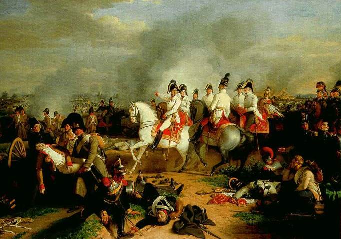
(아스페른-에슬링 전투에서의 카알 대공입니다. 이 양반의 인생 전투라고 할 수 있지요.)
그에 비해 나폴레옹은 이틀 간의 전투 내내, 안전한 로바우 섬이나 강변 등 후방에서 지휘했습니다. 근위병 쿠아녜(Coignet)의 수기에 따르면, 5월 22일 아침 나폴레옹이 강변에서 전투 현장으로 이동하려 할 때, 그가 타고 있던 말이 적의 대포알에 맞아 쓰러지는 대형 사고가 일어났다고 합니다. 그 때 쿠아녜를 비롯한 근위대 병사들이 '황제 폐하께서 이렇게 위험한 곳에서 뒤로 물러서지 않으신다면 우리 근위대는 한발짝도 전진하지 않겠다'라고 나폴레옹의 후퇴를 강요했기 때문에 나폴레옹도 어쩔 수 없이 후방으로 물러났다고는 합니다만... 글쎄요. 확실한 것은 1796년 북부 이탈리아 아르콜레(Arcole) 다리에서 진흙투성이가 되어 가며 싸우던 나폴레옹은 1809년 도나우 강변에는 없었다는 것입니다.
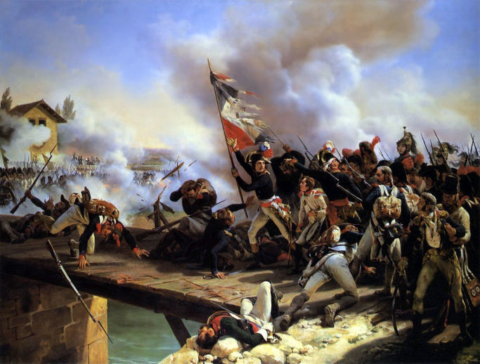
(1796년 아르콜레 다리에서의 나폴레옹입니다. 저 전투에서 나폴레옹은 자기가 깃발을 들고 앞장 서서 다리 위로 돌격한 것처럼 저런 그림을 그리게 했지만, 정작 저 장면에 가장 가까운 모습을 보여준 것은 그와 사이가 그리 좋지 않았던 그의 부하 오쥬로였습니다.)
카알 대공이 병력을 물린 덕분에, 더 이상의 퇴로가 끊긴 로바우 섬의 프랑스군은 비로소 한숨 돌릴 수 있었습니다. 문제는 로바우 섬 여기저기에 가득찬 부상병들도 아무 치료를 못 받았고 후송도 되지 못 했을 뿐만 아니라, 부상 없이 살아남은 병력들도 아무런 보급품을 받지 못한 채 방치되었다는 것입니다. 새벽 1시가 되어 더 이상 소동이 없다는 것을 확인한 뒤, 나폴레옹은 쪽배를 타고 로바우 섬에서 도나우 강 남안의 카이저에버스도르프로 건너갔습니다. 이때 나폴레옹은 부상을 입은 채 포로가 된 오스트리아 장교 1명을 함께 쪽배에 태워 후송시키는 아량을 베풀었습니다. 의문이 드는 것은 그의 절친 란조차도 깨끗한 물 한모금 없이 담요 한장 덮지 못하고 로바우 섬에 방치된 상태였는데, 적군 장교에게는 그런 인도주의적 아량을 베풀었다는 점이지요. 어떻게 생각하면 그런 패전 속에서도 '인도주의자 나폴레옹'이라는 허명을 얻을 선전거리를 만드려는 계략이 아닌가 의심도 듭니다만, 캄캄한 밤 수많은 병사들과 부상병들이 뒤엉킨 상황에서 부상을 입은 란을 금방 찾아내는 것이 쉽지는 않았을 것입니다. 로바우 섬에는 비축된 식량이 전혀 없었기 때문에, 마르보의 수기에 따르면 그날 밤 많은 병사들은 로바우 섬 여기저기에 많이 있던 죽은 군마의 고기를 잘라내어 흉갑 기병의 갑옷을 냄비 삼고 화약을 소금 삼아 삶아 먹었다고 합니다. 화약을 고기에 넣는다는 것은 굉장히 이상하고 건강에 해로울 것 같긴 합니다만, 어차피 당시 화약은 황과 숯, 그리고 질산칼륨으로 되어 있었고 질산칼륨 덕분에 화약은 짠 맛이 나는 것이 사실이었습니다. 또 당시 머스켓 소총 장전 방식은 병사들의 입 안에 화약이 항상 조금씩 들어갈 수 밖에 없었으니 병사들은 화약으로 짠 맛을 낼 수 있다는 것을 잘 알고 있었지요.
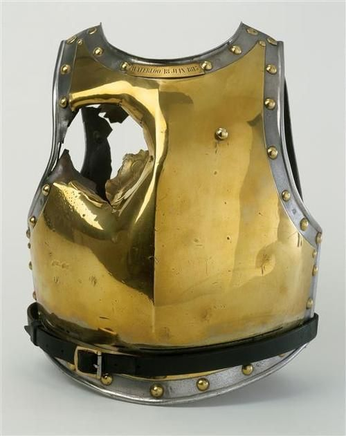
(1815년 대포알 구멍이 뚫린 프랑스 흉갑기병의 가슴받이 갑옷이라고 구글에 나옵니다만... 진짜 그런 물건치고는 너무 상태가 좋네요.)
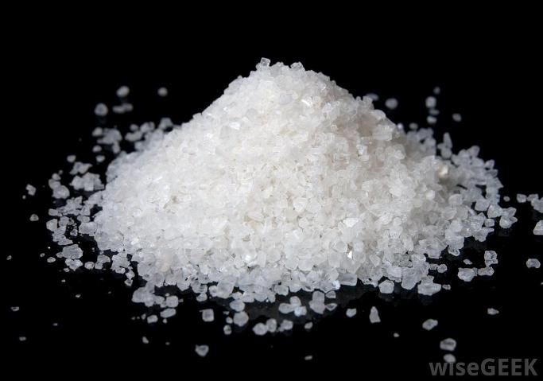
(흑색화약은 75%의 초석과 15%의 숯, 그리고 10%의 유황으로 되어 있습니다. 초석은 영어로 saltpeter라고 하지요. 짠맛이 난다고 합니다. 제가 직접 맛을 본 적은 없습니다.)
5월 23일 새벽이 되어서야 비로소 보트들을 이용한 부상자들의 소개가 시작되었고, 다리를 절단한 란도 이때서야 도나우 남안으로 건너갈 수 있었습니다. 끊어진 다리는 하루 뒤인 24일에야 다시 연결되었지만, 많은 병사들은 결국 로바우 섬을 떠나지 못했습니다. 나폴레옹은 패배를 인정하지 않았고, 이번에는 제대로 준비해서 제대로 공격하겠다고 결심하여 즉각 그 준비에 들어갔기 때문이었습니다. 나폴레옹은 로바우 섬 이곳저곳에 보루와 포대를 설치하여 군사 요새화시키는 작업에 착수했습니다. 나폴레옹이 이렇게 준비하는 동안에라도 카알 대공이 강변으로 대포들을 끌고 와 로바우 섬에서 무쇠와 화약의 화려한 불꽃놀이를 벌였다면 어땠을지 모르는 일이었습니다. 그러나 카알 대공은 오스트리아군의 재정비가 더 급한 일이라고 생각했고, 나폴레옹과 프랑스군은 도나우 강 좌안으로의 재도강 준비를 방해받지 않고 착실히 수행할 수 있었습니다.
이 전투는 분명히 오스트리아군의 승리였습니다. 왜 카알 대공이 이 값진 승리를 100% 활용하여 22일 밤 프랑스군을 더 몰아 붙이지 않았는지, 또 왜 23일~24일에 로바우 섬에 포격이라도 가하지 않았는지는 의문으로 남을 수 있습니다. 마치 승리가 간절하지 않은 사람처럼 행동했다고 볼 수도 있었지요. 그러나 카알 대공의 후속 작전이 없었던 이유는 간단했습니다. 그 이틀간의 전투가 너무나 치열했기 때문에, 오스트리아군의 피해가 너무 컸고 또 병사들이 너무나 지쳤기 때문이었습니다. 당시 어지간한 전투에서 패배한 측의 (포로를 제외한) 전상자 비율은 총병력 대비 10~15% 정도가 상식적인 수준이었습니다. 어차피 전쟁이라는 것은 왕가끼리의 영토와 세수를 위한 비즈니스의 연장일 뿐, 뭐 불구대천 원수지간끼리의 너죽고나살자식의 살육전은 아니었습니다. 적당히 싸우다 전세가 불리하면 물러나는 것이 상식이었고, 그 과정에서 많은 포로가 나기도 했지만 그렇다고 총병력의 20% 넘는 병사들이 죽거나 다치는 일은 흔하지 않았습니다. 그러나 아스페른-에슬링 전투에서 승리한 오스트리아군의 사상자 비율이 무려 23%였습니다. 사상자 비율로만 본다면 아마 참담한 완패라고 생각할 정도였습니다. 오스트리아군 장교들과 병사들의 충격은 말할 나위 없이 컸을 것이고, 그런 참극을 현장에서 생생하게 본 카알 대공도 병사들의 사기를 고려하지 않을 수 없었습니다. 결국 오스트리아군이 더 공격하지 않은 것은 그럴 수가 없을 정도로 피해가 컸기 때문이라고 보시는 것이 맞을 듯 합니다.
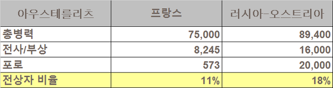
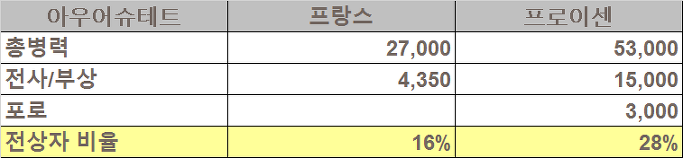
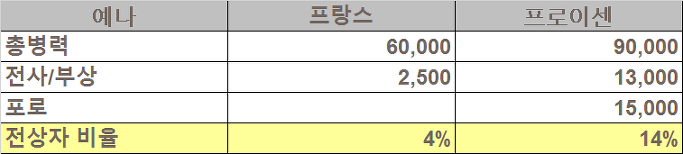
(전례없이 승패가 뚜렷하게 드러났던 아우스테를리츠, 예나, 아우어슈테트 전투에서의 사상자 비율입니다. 여기서 전상자 비율 계산할 때 포로는 제외했습니다.)
이긴 오스트리아군의 피해가 그 정도였는데, 진 프랑스군의 피해는 더욱 컸을 것입니다. 전투 후 전상자 숫자에 대해서, 오스트리아군은 비교적 상세히 포로를 합해 23,340명이라고 발표했습니다. 프랑스군은 애매모호한 표현만 쓰며 정확한 전상자를 발표하지 않았습니다만, 대개 오스트리아군과 비슷한 2만3천 명 정도의 피해를 입었을 것이라고 추정합니다. 어떻게 보면 더 적은 병력을 동원했는데 적과 비슷한 수의 사상자를 냈으니, 프랑스군이 더 효율적으로 싸웠다고 볼 수도 있습니다. 그러나 사상자 비율 측면에서 보면 무려 35%에 달했습니다. 함께 전장으로 나간 전우 3명 중 1명이 돌아오지 못한 것입니다. 이 정도면 가히 부대 단위로서의 기능을 잃을 정도의 대참패였습니다.
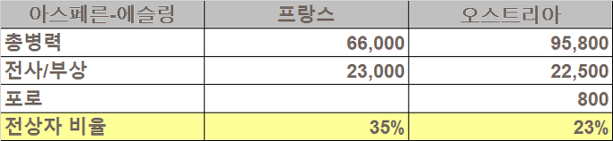
(아스페른-에슬링 전투의 사상자 비율입니다. 이긴 측이나 진 측이나 예전에 비해 깜짝 놀랄 정도로 큰 피해를 입은 것을 보실 수 있습니다.)
이 전투에서 승리한 측이나 패배한 측이나 왜 이렇게 큰 인명 피해가 났는가에 대해서 짚어보지 않을 수 없습니다. 이유는 사실 명백하고 단순합니다. 여태까지 수많은 승리를 가져온 나폴레옹 전술의 요체는 기동전이었습니다. 적보다 훨씬 더 뛰어난 기동력을 이용하여 병력의 이동과 집결을 자유자재로 펼쳤고, 그를 통해 전체적인 병력은 적보다 더 적을지라도, 정작 전투 현장에서는 적보다 더 많은 병력을 투입했던 것이 그 승리의 비결이었지요. 그러나 다리가 끊긴 도나우 강변에서는 그런 전술이 전혀 통하지 않았습니다. 결국 더 적은 병력으로 무리하게 정면 중앙 돌파를 노렸기 때문에 과거와는 달리 일방적인 전투가 아닌 치열한 살육전이 벌어졌고, 결국 피해가 클 수 밖에 없었습니다. 나폴레옹은 흔히 전장의 신이라고 불리는, 그야말로 천재에 가까운 인간이었으나, 그도 인간인지라 나이가 들면서 명민함이 떨어지고, 또 관록이 쌓이고 신분이 높아지면서 교만함이 커진 것이 이런 참극을 불러왔다고 저는 생각합니다. 어떻게 보면 나폴레옹의 천재성이 돋보인 전투는 4월에 벌어진 란츠후트 기동전이 마지막이었고, 이후 1812년 러시아 원정때까지 나폴레옹의 지휘는 평범한 물량전 이상의 모습을 보여주지 못했습니다.
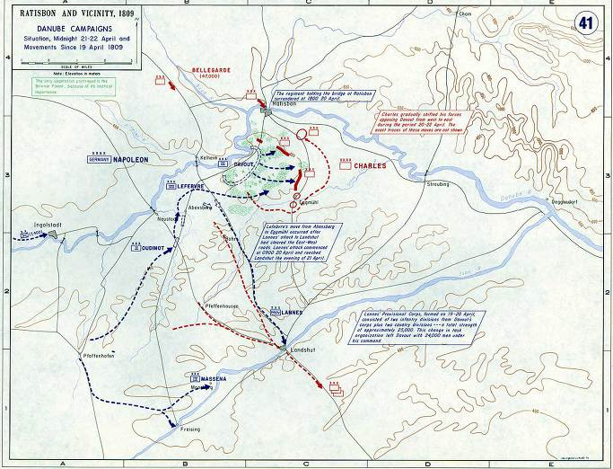
(1809년 4월 19일 이후에 벌어진 란츠후트 기동전입니다. 베르티에의 실수로 인해 위기에 빠진 프랑스군을, 나폴레옹은 도착하자마자 현란한 풋워크를 통해 단번에 뒤집고 카알 대공으로 하여금 대대적 후퇴를 하도록 강요했습니다. 이 전투가 1813년 이전까지는 나폴레옹의 천재성을 보여준 거의 마지막 전투였습니다.)
양측의 피해가 커진 원인은 또 있습니다. 아마 1805년의 오스트리아군이라면 아스페른-에슬링 두번째 날, 란이 직접 지휘한 프랑스군 생-일레르 사단의 공격에 중앙을 돌파당했을 가능성이 큽니다. 만약 그랬다면, 아무리 평범한 정면 공격이라도 큰 전과를 거둘 수도 있었겠지요. 그러나 오스트리아군은 (비록 잠깐 동안은 거의 돌파 당한 것이나 다름없는 순간까지 갔지만) 결국 버티어냈습니다. 오스트리아 합스부르크 왕가에서는 이를 카알 대공의 개인적 용기와 리더쉽에 의한 승리라고 떠벌였지만, 수천 수만명의 병사들이 뒤엉키는 전장터에서 개인 하나가 발휘하는 용기는 사실 별 의미가 없습니다. 이때 오스트리아군이 버티어낸 것은 오스트리아 병사 개개인이 1805년 패전 이후 카알 대공의 대대적 군 개편에 의해 많이 바뀐 상태이기 때문이었습니다.
이전의 오스트리아군은 일부 상비군 외에는 필요할 때마다 징집되어 동원되는 군대였고, 따라서 당시 전장에서 요구되는 복잡한 대형 변환 등이나 개인 전술 등에 숙련되지 않았습니다. 그에 비해 프랑스군은 전국민 개병제에 의해 징집되는 상비군 형태였으므로 훨씬 더 많은 훈련을 받고 또 많은 전쟁으로 인해 숙련된 군대였습니다. 카알 대공의 군 개혁은 합스부르크 세습 영토(즉 헝가리나 세르비아 등을 제외한 독일계 영토)에서의 전면적 징집제 실시 및 군단 제도의 도입 등 프랑스군을 거의 그대로 베끼는 수준이었는데, 비록 귀족들로 구성된 지휘부까지 갈아치우지는 못했으나, 병사들 하나하나의 자질 면이나 오스트리아군 전체의 전쟁 수행 능력을 크게 향상시킨 것이 사실이었습니다. 또 있었습니다. 과거 오스트리아 사병들은 합스부르크 왕가의 이해 관계에 따라 북부 이탈리아나 발칸 반도, 네덜란드나 체코 등에서 프랑스군과 싸울 때, 대체 자기들이 왜 이런 이역 만리에서 싸우고 있는지 전혀 모르고 있었습니다. 그러나 이제 나폴레옹에 맞서 마르쉐펠트에 펼쳐진 병사들은 자신의 고향과 가족을 프랑스군의 침략으로부터 지켜야 하는 입장이었습니다. 특히 4년 전 비엔나를 점령할 때 프랑스군이 오스트리아를 톡톡히 털어가는 것을 본 뒤인지라, 여기서 또 그런 피해와 굴욕을 입어서는 안된다는 동기 부여가 된 상태였지요. 나폴레옹은 이번 전투를 통해, 오스트리아군이 더 이상 프랑스군의 밥이 아니라는 것을 뼈저리게 깨달아야 했습니다.
또한 프랑스군 자체적인 문제도 있었습니다. 이번 전쟁을 시작하며, 나폴레옹은 '내 군대가 이렇게 잘 정비되고 수가 많았던 적이 없다'라고 스스로 자랑했으나, 오스트리아군이 더 이상 예전의 오스트리아군이 아닌 것처럼 프랑스군도 더 이상 1805년 아우스테를리츠의 프랑스군이 아니었습니다. 원래 나폴레옹의 그랑 다르메(Grande Armee)는 불로뉴(Boulogne) 병영에서 집중 훈련을 받은 영국 방면군을 모체로 하는 대부대로서, 그야말로 정예 병력이었습니다. 그러나 나폴레옹이 이들을 끊임없이 전장으로 끌고 다니며 소비하다, 결국 1807년 동프로이센 아일라우(Eylau) 전투에서 큰 피해를 입은 바 있었습니다. 따라서 1809년 도나우 강변에 도착한 이들은 더 이상 다년간의 전투로 다져진 고참병들이 아니라 아직 앳된 티를 벗지 못한 신병들이 많이 섞여 있었습니다. 또 이번 제5차 대불동맹전쟁에 동원된 나폴레옹 휘하 부대 중에는 프랑스군 뿐만 아니라 뷔르템베르크나 바이에른 등 많은 독일 소국들의 군대와 북부 이탈리아군도 섞여 있었습니다. 이렇게 반강제로 동원된 동맹군들이 과거의 그랑 다르메처럼 열정적으로 싸워주기를 기대하는 것은 무리였습니다.
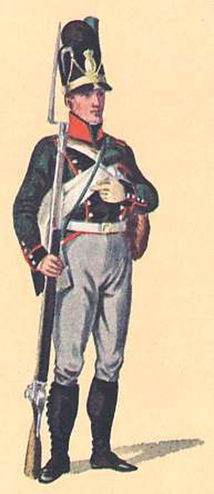
(라이플 소총을 든 바이에른 유격병입니다. 이런 병사들은 특히 1812년 러시아로 떠나면서 대체 왜 자기가 머나먼 러시아에 가서 러시아 사람들을 죽여야 하는지 이해가 안 갔을 것입니다.)
이런저런 이유가 섞여, 결국 나폴레옹은 모두가 인정하는 나폴레옹 개인의 첫 패배가 이곳 아스페른-에슬링에서 일어났습니다. 무적 신화를 자랑하던 프랑스 황제 나폴레옹의 첫 패배 소식은 마른 들판에 불이 번지듯 유럽 전역으로 퍼져 나갔습니다. 알고 보면 나폴레옹은 이미 이곳저곳에서 많이 패배한 바 있습니다. 가장 최근의 아일라우 전투도 사실상 나폴레옹의 개인적 패배였고, 과거 1797년 만토바 구원 작전에서 알빈치(József Alvinczi von Borberek) 장군의 오스트리아군에게 크게 패배한 적도 있었고, 시리아 아크레에서의 패배도 있었습니다. 그러나 그런 패배들은 황제가 되기 전의 일이거나, 저 머나먼 동유럽 귀퉁이에서 벌어진 일이었습니다. 나폴레옹은 트럼프 못지 않게 대안적 사실(alternative facts)이라는 조작질에 익숙한 선동가였으므로 아일라우 전투 같은 것은 '베니히센이 물러났으므로 나의 승리'라는 식으로 포장을 한 바 있었습니다. 그러나 오스트리아 수도 빈 바로 코 앞에서 벌어진 이 대규모 전투의 승부는 도저히 숨길 방법이 없었습니다. 체면을 구긴 나폴레옹은 '최전선에서 먼저 물러간 것은 카알 대공이다, 그러므로 나의 승리다'라든가 '내가 진 것은 도나우 강에게 진 것이다, 오스트리아군 따위에게 진 것이 아니다' 라는 식의 발언을 하며 성질을 부렸습니다. 대체 이겼다는 것인지 졌다는 것인지 앞 뒤가 맞지 않는 발언을 한다는 것 자체가 나폴레옹 스스로도 패배를 인정한다는 것이었지요.
나폴레옹이 '도나우 강에게 졌다'라고 한 것은 사실 핑계에 불과합니다. 나폴레옹이 과거 연전연승을 거두었던 것은 운을 바라고 도박을 벌였기 때문이 아니었습니다. 그가 우수한 지휘관들이 통솔하는 잘 훈련된 군대를 거느리고 있었고, 치밀한 지리 연구와 엄밀한 행군 속도 계산에 의해 병참과 병력 이동 계획을 짰기 때문에 가능했던 것입니다. 그런데 1809년 5월 22일 아침, 그는 이미 여러번 끊어진 바 있는 로바우 섬 남단의 위태로운 부교가 언제든 또 끊어질 확률이 있는데도 불구하고 란에게 진격 명령을 내렸습니다. 이는 부풀려질 대로 부풀려진 자만심과 내가 펼치는 작전인데 뭔가 당연히 행운이 따르겠지라는 안일한 생각이 아니라면 있을 수 없는 일이었습니다. 결국 부교는 또 끊어졌고, 나폴레옹은 그 댓가를 란의 목숨과 패배로 치루어야 했습니다.
영화 미션 임파서블 5에서 악당 솔로몬 레인이 이단 헌트(톰 크루즈)에 대해 이런 평가를 하지요.
Ethan Hunt is a gambler. And one day his luck will run out. (이단 헌트는 갬블러야. 언젠가는 그의 운빨도 끝나게 되어 있어.)
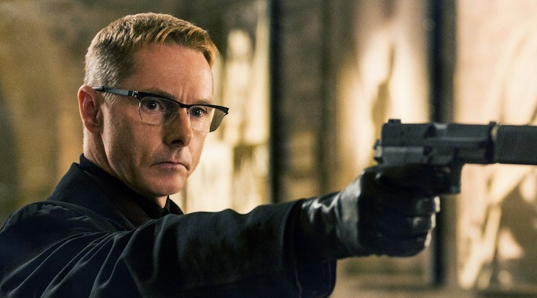
나폴레옹은 톰 크루즈와는 달리 갬블러가 아니었습니다. 그러나 이날 갬블링을 했고, 그러자마자 운은 결코 그의 편이 아니라는 것이 드러난 셈이었습니다.
분명 이 전투는 카알 대공의 승리였고 나폴레옹의 패배였습니다. 그러나 전투가 아닌 전쟁 측면에서 보면 그렇지는 않았습니다. 카알 대공은 이 의미있는 승리를 충분히 활용하지 못했고, 나폴레옹은 패배를 받아들이지 않았습니다. 카알 대공이 이번 전투를 시작할 때 프랑스군의 도강을 중간에 격파하는 절대적으로 유리한 작전을 쓰지 않고 나폴레옹의 군대가 도강을 다 마친 뒤 정정당당하게 승부를 벌이려 했던 것은 이유가 있는 결정이었습니다. 당시의 국가적 역량으로 볼 때, 프랑스 제국과 오스트리아 제국의 격차는 너무나 뚜렷한 것이었습니다. 그렇게 도강 중간에 공격을 가함으로써 나폴레옹에게 작은 패배를 안겨줄 수는 있을지 몰라도, 그럴 경우 나폴레옹은 패배를 인정하지 않고 더 많은 준비를 해서 다시 전투를 벌이려 할 것이 틀림없으며, 그럴 경우 무의미한 희생만 치를 뿐 오스트리아에게는 승산이 없다고 카알 대공은 생각했던 것입니다. 카알 대공의 목표는 나폴레옹에게 한방 먹이는 것이 아니라, 오스트리아 제국을 유지하는 것이었습니다. 애초에 이기지 못할 전쟁이라면 애초에 전쟁을 시작하지 않는 것이 유리했는데, 카알 대공의 생각에 오스트리아가 전쟁에서 승리할 유일한 방법은 나폴레옹이 패배를 인정할 만한 정정당당한 전투를 벌여, 어떻게든 거기서 이기는 것이었습니다. 로바우 섬 남단의 부교가 끊어지는 순간, 나폴레옹은 전투에서 지게 되었지만 핑계거리를 찾았던 것이고, 카알 대공이 원하던 후회없는 정정당당한 전투는 날아가 버린 셈이었습니다.
그리고 카알 대공의 그런 생각은 옳은 판단이었습니다. 나폴레옹은 패배를 도나우 강 탓으로 돌렸고, 그에게는 구겨진 그의 체면을 세워줄 승리가 간절했습니다. 그 결과 프랑스군과 오스트리아군은 다시 바그람에서 마주 서게 됩니다. 그리고 결국 프랑스의 역량이 오스트리아를 압도하게 됩니다.
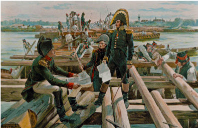
(이번에는 제대로... 다리부터 튼튼히...)
Source : The Emperor's Friend: Marshal Jean Lannes By Margaret S. Chrisawn
Three Napoleonic Battles By Harold T. Parker
The Life of Napoleon Bonaparte, by William Milligan Sloane
https://en.wikipedia.org/wiki/Battle_of_Aspern-Essling
http://www.historyofwar.org/articles/battles_aspern_essling.html
https://www.napoleon.org/en/history-of-the-two-empires/articles/the-battle-of-aspernessling/
http://obscurebattles.blogspot.kr/2016/05/aspern-essling-1809.html